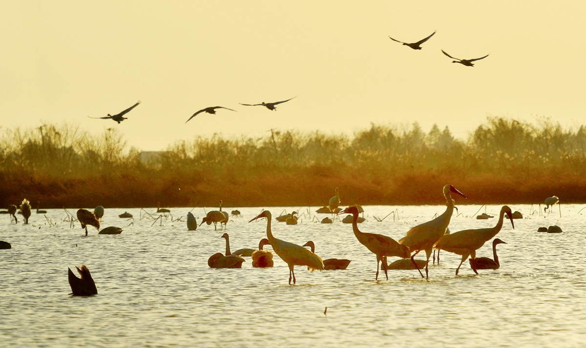

江西鄱阳湖国家级自然保护区
Jiangxi Poyang Lake National Nature Reserve
江西鄱阳湖国家级自然保护区（简称鄱阳湖保护区）位于江西省北部。是保护野生动物类型的自然保护区，主要保护对象是白鹤等珍稀候鸟及其越冬地。保护区属内陆型湿地，主要湿地类型包括湖泊、永久性河流、时令湖和永久性淡水草本沼泽、泡沼。
2002 年加入了中国生物圈保护区网络；2006 年加入了东亚—澳大利西亚鸻形目鸟类保护网络。在第十一届世界生命湖泊大会上被全球自然基金（GNF）授予“世界生命湖泊最佳保护实践奖”，被国家林业局确定为“全国自然保护区示范单位”。
2022年10月20日，江西鄱阳湖国家级自然保护区管理局沙湖站、庐山市公安局蛟塘派出所联合发布《关于禁止未经批准进入江西鄱阳湖国家级自然保护区的告知书》，未经批准禁止进入鄱阳湖国家级自然保护区。
2023年11月30日，国家林业和草原局公布《陆生野生动物重要栖息地名录（第一批）》，江西鄱阳湖湿地候鸟重要栖息地入选。
保护区现有鸟类310种，隶属于17目55科，其中国家一级保护动物10种，二级保护动物40种，属于中日候鸟保护协定的鸟类有153种，占该协定中鸟类总数227种的67.4%；属于中澳候鸟保护协定的鸟类有47种，占该协中鸟类总数81种的58%。
